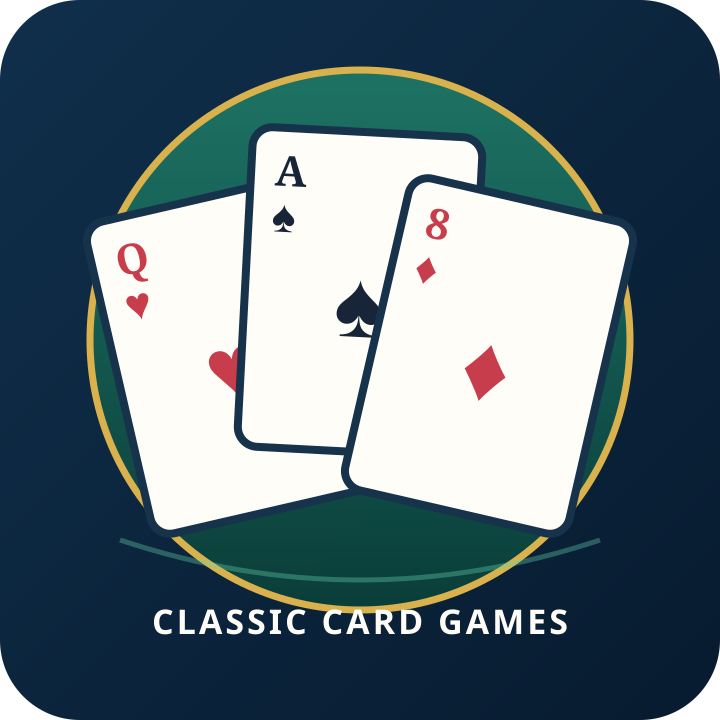

Gin Rummy
Draw and discard to build sets and runs while keeping Deadwood low.

Draw and discard to build sets and runs while keeping Deadwood low.
Build sets of the same rank and suited runs while reducing unmatched Deadwood.
Draw from the stock or discard, then discard one card. Knock with a low Deadwood hand or reach Gin.
This owner preview is not in the formal public catalog.